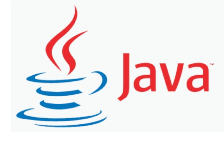
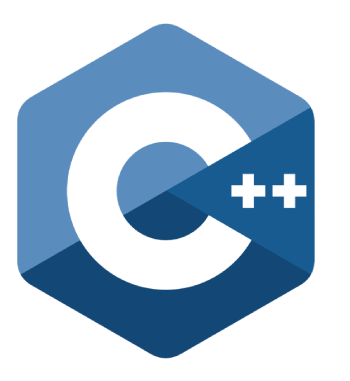

PROGRAMMING LANGUAGES
As we know, to communicate with a person, we need a specific language, similarly to communicate with computers, programmers also need a language is called Programming language.
Before learning the programming language, let's understand what is language?
What is Language?
Language is a mode of communication that is used to share ideas, opinions with each other. For example, if we want to teach someone, we need a language that is understandable by both communicators.
What is a Programming Language?
A programming language is a computer language that is used by programmers (developers) to communicate with computers. It is a set of instructions written in any specific language ( C, C++, Java, Python) to perform a specific task.
1. Low-level programming language
Low-level language is machine-dependent (0s and 1s) programming language. The processor runs low- level programs directly without the need of a compiler or interpreter, so the programs written in low-level language can be run very fast.
Low-level language is further divided into two parts -
i. Machine Language
Machine language is a type of low-level programming language. It is also called as machine code or object code. Machine language is easier to read because it is normally displayed in binary or hexadecimal form (base 16) form. It does not require a translator to convert the programs because computers directly understand the machine language programs.
The advantage of machine language is that it helps the programmer to execute the programs faster than the high-level programming language.
i. Assembly Language
Assembly language (ASM) is also a type of low-level programming language that is designed for specific processors. It represents the set of instructions in a symbolic and human-understandable form. It uses an assembler to convert the assembly language to machine language.
2. High-level programming language
High-level programming language (HLL) is designed for developing user-friendly software programs and websites. This programming language requires a compiler or interpreter to translate the program into machine language (execute the program).
The main advantage of a high-level language is that it is easy to read, write, and maintain.
High-level programming language includes Python, Java, JavaScript, PHP, C#, C++, Objective C, Cobol, Perl, Pascal, LISP, FORTRAN, and Swift programming language.
HTML
 HTML stands for HyperText Markup Language.
HTML is used to create web pages and web applications.
HTML is widely used language on the web.
We can create a static website by HTML only.
Technically, HTML is a Markup language rather than a programming language
HTML stands for HyperText Markup Language.
HTML is used to create web pages and web applications.
HTML is widely used language on the web.
We can create a static website by HTML only.
Technically, HTML is a Markup language rather than a programming language
PYTHON LANGUAGE
 Python is one of the most widely used user-friendly programming languages. It is an open-source and easy to learn programming language developed in the 1990s. It is mostly used in Machine learning, Artificial intelligence, Big Data, GUI based desktop applications, and Robotics
Python is one of the most widely used user-friendly programming languages. It is an open-source and easy to learn programming language developed in the 1990s. It is mostly used in Machine learning, Artificial intelligence, Big Data, GUI based desktop applications, and Robotics
JAVA

Java is a simple, secure, platform-independent, reliable, architecture-neutral high-level programming language developed by Sun Microsystems in 1995. Now, Java is owned by Oracle. It is mainly used to develop bank, retail, information technology, android, big data, research community, web, and desktop applications.
C
 C is a popular, simple, and flexible general-purpose computer programming language. Dennis M Ritchie develops it in 1972 at AT&T. It is a combination of both low-level programming language as well as a high-level programming language. It is used to design applications like Text Editors, Compilers, Network devices, and many more
C is a popular, simple, and flexible general-purpose computer programming language. Dennis M Ritchie develops it in 1972 at AT&T. It is a combination of both low-level programming language as well as a high-level programming language. It is used to design applications like Text Editors, Compilers, Network devices, and many more
C++

C++ is one of the thousands of programming languages that we use to develop software. C++ programming language is developed by Bjarne Stroustrup in 1980. It is similar to the C programming language but also includes some additional features such as exception handling, object-oriented programming, type checking, etc.
And many more languages are there